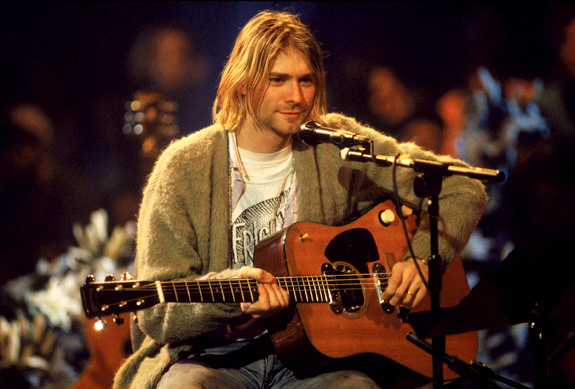
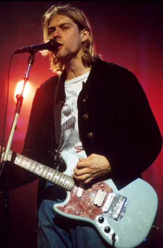
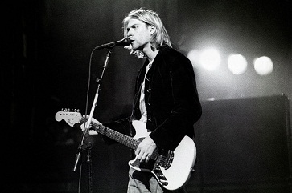
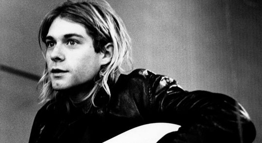

Курт До́нальд Кобе́йн (англ. Kurt Donald Cobain; 20 февраля 1967 — 5 апреля 1994)[3][4] — американский певец, автор песен, музыкант и художник, наиболее известный как вокалист и гитарист американской рок-группы Nirvana, исполнявшей гранж.
Курт Дональд Кобейн родился 20 февраля 1967 года в больнице Grays Harbor в Абердине, штат Вашингтон[5], в семье домохозяйки Венди Элизабет (девичья фамилия Фраденбург)[6] и автомеханика Дональда Лиланда Кобейна. Родословная Кобейна имеет ирландские, английские, шотландские и немецкие корни[7][8][9]. Ирландские предки Кобейна эмигрировали в 1875 году из графства Северной Ирландии Тирон[9] в Корнуолл, Онтарио, Канада, а затем в Вашингтон[10]. У Кобейна есть родная младшая сестра, Кимберли, появившаяся на свет 24 апреля 1970 года [6][8].
Курт рос в музыкальной семье: его дядя по матери, Чак Фраденбург, выступал с группой под названием The Beachcombers, тётка Мэри Эрл играла на гитаре в различных местных ансамблях, двоюродный дед Делберт сделал карьеру тенора и даже снялся в фильме 1930 года «Король джаза» (en:King of Jazz)[11]. Интерес к музыке проявился у него достаточно рано: по словам его родственников, уже в возрасте двух лет он с удовольствием распевал песни The Beatles[11]. В четыре года он написал свою первую песню о поездке в местный парк. В возрасте семи лет получил в подарок от тёти ударную установку[12]. Помимо способностей к музыке, он показал себя и как талантливый маленький художник. В этом его поощряла бабушка, которая была профессиональной художницей.
Некоторое время мальчик жил с матерью, однако у него не сложились отношения с её новым приятелем, 22-летним Майком Медаком, и он переехал к отцу в Монтесано. Дональд вскоре женился на Дженни Уэстби, у которой было двое детей, Минди и Джеймс. В январе 1979 года Дженни родила ещё одного ребёнка, Чэда, единокровного брата Курта. Но Курт также не ладил с Дженни, и поэтому ему пришлось уйти от отца — мальчик жил то у Лиланда и Айрис, родителей Дональда, то у родственников со стороны матери.
В 14 лет Курт забросил игру на барабанах и начал учиться играть на гитаре, подаренной ему дядей Чаком на день рождения. Уоррен Мейсон, музыкант группы The Beachcombers, стал его первым учителем[14]. Приблизительно в то же время Курт заинтересовался панком, прочитав статью о группе Sex Pistols в журнале «Creem»[12]. Приобрести их пластинки в Абердине было практически невозможно, поэтому он довольно смутно представлял себе, как должна звучать такая музыка (по его собственному определению — «три аккорда и много крика»), но в душе Курт уже загорелся идеей создать панк-группу. Вскоре он познакомился с участниками абердинского коллектива Melvins, игравшего музыку, совмещающую в себе элементы панка и хард-рока (впоследствии этот стиль был назван «гранжем»). Туда также приходил и Крист Новоселич, вследствие чего они подружились.
В 1984 году Венди Кобейн вышла замуж за Пэта О’Коннора, докера, страдавшего алкоголизмом, который однажды сломал Венди руку. Курт вернулся в дом своей матери, однако отношения с родными у него складывались неважно. После окончания школы решил не поступать в художественный колледж; мать поставила его перед выбором — либо он идёт на работу, либо уходит из дома. Ему пришлось уйти. Почти всё дальнейшее время Курт жил у своих друзей, каждый день переходя из дома в дом. Часто ему приходилось спать во дворах домов друзей, остальное время проводил в библиотеке, «дожидаясь конца дня»[12]. По словам Курта, некоторое время он жил под мостом реки Уишка, что вдохновило его на написание песни «Something in the Way»[15]. Позже ему всё-таки пришлось устроиться на работу. 18 мая 1986 года Курт был арестован за незаконное проникновение на чужую территорию, а также употребление алкоголя и был посажен в тюрьму на 8 дней.
В 1985 году Курт организовал группу, названную Fecal Matter; состояла она из бас-гитариста Дейла Кровера, барабанщика Грега Хокансона и собственно Кобейна — вокалиста и гитариста. Приблизительно через год Fecal Matter распались, так и не выпустив ни одного диска; после этого Курт начал распространять среди знакомых демозапись Fecal Matter — ему хотелось создать новую группу. Одна из кассет досталась Кристу Новоселичу, другу Курта. На некоторое время он, казалось, забыл о ней, но спустя несколько месяцев неожиданно завёл с Кобейном разговор о том, что им стоило бы организовать рок-группу (он прослушал запись, и материал ему понравился). Новообразованная команда (в которой вскоре появился третий участник — ударник Чэд Ченнинг) сменила несколько названий: «Skid Row», «Ted Ed Fred», «Bliss», «Pen Cap Chew», — однако в итоге было выбрано «Nirvana». «Я искал название, которое было бы красивым или приятным», — объяснял Кобейн. В 1988 году вышел первый сингл группы — «Love Buzz/Big Cheese», а уже в следующем году появился в продаже дебютный альбом Nirvana — Bleach.
В 1991 году был издан второй альбом Nirvana — Nevermind, ставший для группы неожиданным прорывом в мейнстрим. Сингл «Smells Like Teen Spirit», ко всеобщему удивлению, стал хитом на MTV (хотя изначально предполагалось, что ведущим синглом с пластинки станет «Lithium»). Внезапный успех Nirvana на международной сцене привлек внимание публики к сиэтлской гранж-сцене и породил волну подражателей. СМИ называли Nirvana «флагманом поколения Х», а самого Кобейна - «голосом поколения». Сам Кобейн испытывал от неожиданно свалившейся на голову популярности дискомфорт: сам он видел себя прежде всего представителем независимой рок-сцены, и его раздражало то, что он стал кумиром широких масс. Следующий альбом группы, In Utero, он намеренно сделал намного более тяжёлым и мрачным, чтобы отпугнуть широкого слушателя и провозгласить возвращение Nirvana к её «независимым» корням (продюсером альбома стал Стив Альбини, лидер нойз-рок-группы Big Black). Тем не менее, альбом, хоть и не стал таким же успешным, как Nevermind, всё же пользовался популярностью у слушателей и достиг высоких мест в чартах.
Несмотря на то, что Nirvana была «аполитичной» группой и не уделяла большого значения социальным вопросам, как это делали многие панк-ансамбли, Кобейн, тем не менее, пользовался своей известностью, чтобы донести до публики свои идеи. Он был активным защитником прав женщин и секс-меньшинств и поддерживал про-чойс (при том, что лично он восхищался материнством и женщинами-матерями), вследствие чего неоднократно получал угрозы в свой адрес от воинствующих про-лайферов[16]. В буклет к сборнику Incesticide были включены слова: «Если кто-либо из вас из-за чего-либо ненавидит гомосексуалов, людей другой расы или женщин, пожалуйста, сделайте для нас одолжение - идите нафиг и оставьте нас в покое! Не приходите на наши концерты и не покупайте наши альбомы».
В июле 1993 года Кобейн пережил тяжёлую передозировку героином. Кортни Лав обнаружила его лежащим без сознания, и, вместо того, чтобы вызвать «скорую», самолично сделала ему инъекцию налоксона (препарат, блокирующий опиоидные рецепторы и использующийся при отравлении опиосодержащими веществами). Тем же вечером ему предстояло выступление на New Music Seminar в Нью-Йоркe; несмотря на произошедший с ним инцидент, Кобейн изъявил желание присутствовать на шоу и отыграл с группой концерт, не подав на публике виду.
18 марта Лав вызвала полицию, утверждая, что её муж заперся в комнате с ружьём и грозится покончить с собой. Прибывшие полицейские конфисковали у Кобейна несколько ружей (музыкант увлекался стрельбой) и банку с таблетками неизвестного происхождения. Курт заявил, что не собирался кончать с собой и просто хотел спрятаться от жены, с которой у них произошла ссора. В ответ на вопрос полицейского Лав согласилась со словами мужа, сказав, что на самом деле он не собирался убивать себя, хотя ранее утверждала обратное.
25 марта Лав созвала 10 человек из числа друзей Курта и сотрудников его звукозаписывающей компании, чтобы они убедили его отправиться на лечение от героиновой зависимости. Музыкант вёл себя с ними резко, оскорбляя их, однако в конце дня всё же согласился пройти курс реабилитации. Тридцатого он прибыл в реабилитационную клинику «Эксодус» в Лос-Анджелесе. Сотрудники клиники не знали о его депрессивном состоянии и предшествовавших попытках самоубийства; на вид он также казался спокойным, свободно общался с медицинским персоналом и даже весело играл с Фрэнсис Бин, когда её няня привезла полуторагодовалую девочку на встречу с отцом[20]. Это был последний раз, когда он видел свою дочь: тем же вечером он вышел во двор, якобы покурить, и перелез через двухметровую стену (утром того же дня он пошутил, что это был бы «на редкость дурацкий способ побега»). Он взял такси и поехал в лос-анджелесский аэропорт, а оттуда вылетел в Сиэтл. По соседству с ним в самолёте сидел Дафф Маккаган из Guns N' Roses; несмотря на свою резкую неприязнь по отношению к Guns N' Roses и Акселю Роузу лично, Курт, казалось, был рад видеть его. В последующие несколько дней его несколько раз видели в разных местах Сиэтла; его жена и товарищи по группе в это же время оставались в неведении относительно его местонахождения и безуспешно пытались выйти на его след. Кортни Лав наняла частного детектива, чтобы он помог ей выследить Кобейна.
8 апреля 1994 года электрик по имени Гэри Смит (Gary Smith) прибыл в дом Кобейнов, располагавшийся по адресу 171 Lake Washington Blvd East в Сиэтле, в 8 часов 30 минут для установки системы безопасности[21]. Смит несколько раз позвонил в дом, однако двери никто не открыл. Затем он заметил припаркованный в гараже, находившемся рядом с домом, автомобиль Volvo, и решил, что хозяева дома, возможно, в гараже или оранжерее, которая располагалась прямо над гаражом. Смит проверил гараж, затем поднялся по лестнице к оранжерее. Через стеклянную дверь оранжереи Смит заметил тело и предположил, что кто-то спит, однако, присмотревшись, он увидел кровь у левого уха и ружьё, лежащее поперёк тела. Так было обнаружено тело Курта Кобейна. В 8 часов 45 минут Гэри Смит позвонил в полицию и местную радиостанцию. Курт оставил предсмертную записку, написанную красной ручкой.
Протокол осмотра места происшествия был составлен формально, без углублённого анализа деталей. По одной из версий следствия, Кобейн ввёл себе дозу героина, не совместимую с жизнью, и выстрелил себе в голову из ружья. Также криминалисты пришли к заключению, что Курт умер 5 апреля и его мёртвое тело пролежало в доме три дня. Существует предположение и о намеренном убийстве Курта. В список подозреваемых неофициально попала Кортни Лав.
После кремации часть праха Кобейна была развеяна над рекой Уишка в его родном Абердине[22], а часть оставила себе Кортни. Неофициальным местом поклонения памяти певца является мемориальная скамейка в парке Виретта (Viretta Park), расположенном недалеко от последнего дома Кобейна в Сиэтле. Оранжерея над гаражом, где было найдено тело Курта, снесена в 1997 году, а сам дом продан.